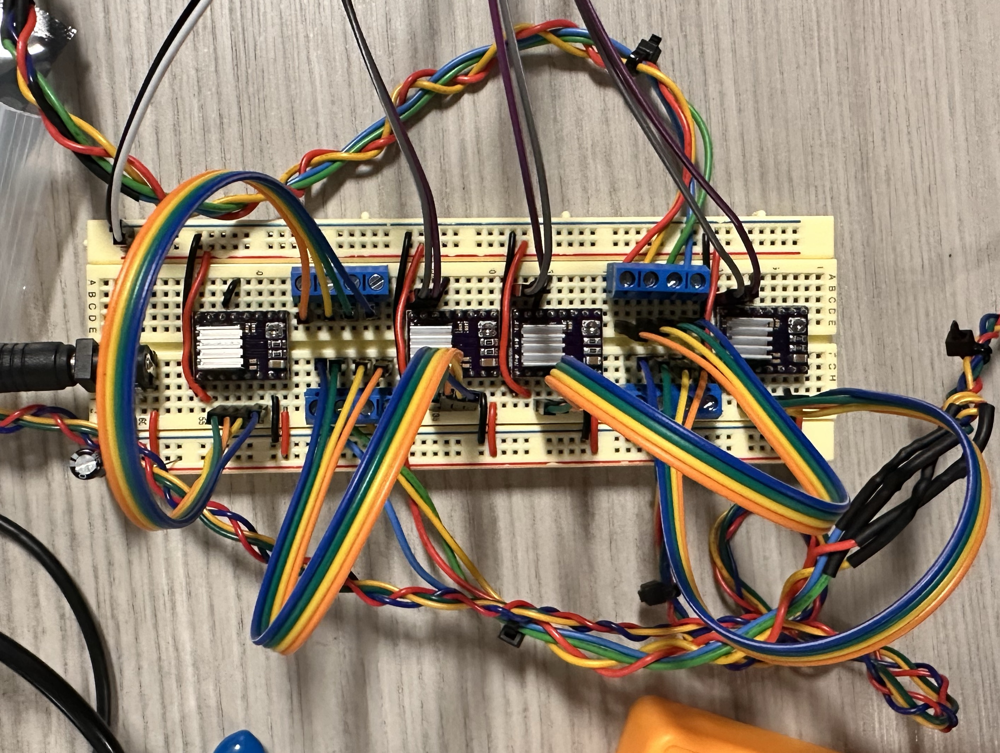
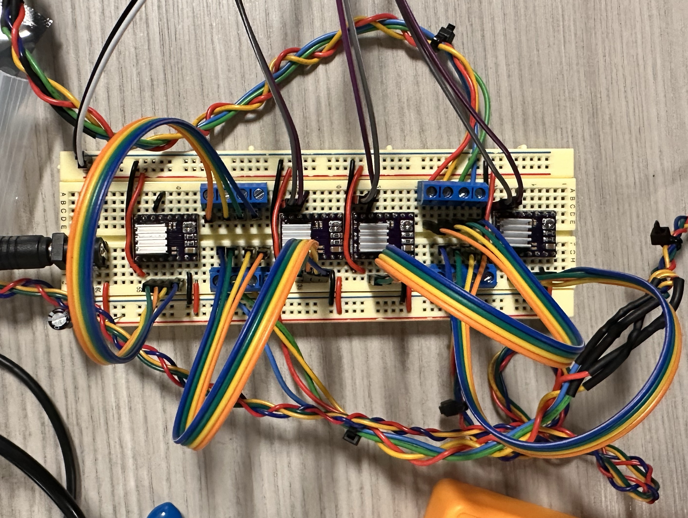
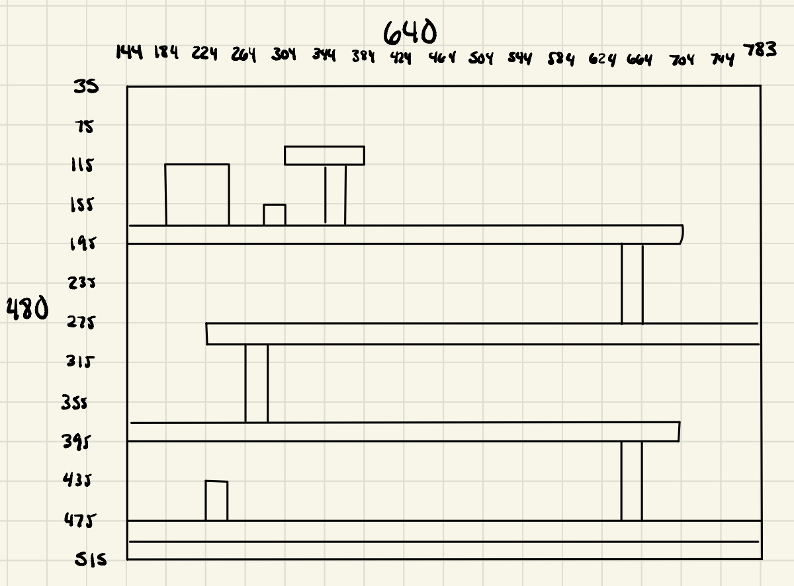
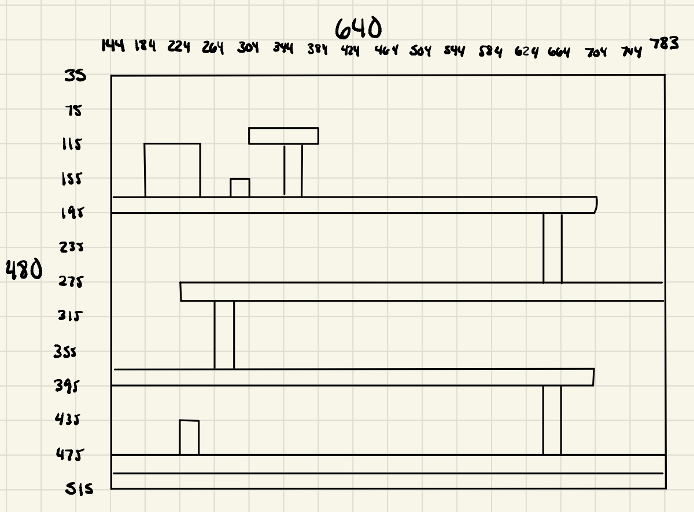

Bradley Miller
Electrical Engineer
About Me
I am a fourth year student pursuing a Bachelor's degree in Electrical and Computer Engineering and a Master's degree in Electrical Engineering at the University of Southern California, planning to graduate in May 2026. The projects in this portfolio were created as personal projects, collaborative efforts, and to demonstrate expertise in class.
KaleidoKickz (CNC Shoe Designer) - Electronics
Kaleido-Kickz is a CNC drawing machine used to customize Converse sneakers. The project contains a front-end for drawing a design, which is converted into G-code for controlling motor movement and moving the marker across the side of the shoe. I owned the complete electrical system design, including feature definition, schematic drawing, component selection, breadboarding, schematic capture, layout, PCB fabrication, assembly, and testing. The end product was my first fully custom PCB design, which fits within the footprint of a Raspberry Pi and delivers the necesary features for the CNC's control systems to function.
 



Technologies Used
KiCAD, Soldering, Troubleshooting Equipment (DMMs, Oscilloscopes)
Key Features
- Raspberry Pi HAT connection for easy attachment
- Support for up to 4 stepper motors
- Support for up to 4 digital I/O (limit switches)
Donkey Kong - Nexys A7 Edition
Basic recreation of Donkey Kong using a Digilent Nexys A7 FPGA and a VGA monitor, written in Verilog.

 

Technologies Used
Verilog, Vivado, Questasim, VGA
Key Features
- Verilog implementation of basic Donkey Kong game
- Tested on Digilent Nexys A7 FPGA boards
- Movement control for left/right and climbing/descending ladders
- Moving barrels that cause reset on player contact
- Game menu for starting/pausing gameplay
Custom Electric Guitar
Designed, simulated, prototyped, and tested analog circuitry for an electric guitar's amplifier. Built a simple electric guitar with a cigar box, a wooden neck, 6 strings, and magnetic pickups. Connected pickups to amplifier circuit and outputted signal to 5 ohm speaker.


Technologies Used
LTSpice, Op-Amps, Troubleshooting Equipement (DMMs, Oscilloscopes)
Key Features
- Guitar string signal amplification and filtering for direct speaker output
- 2 amplifying stages for a total of 20x voltage gain
- Passive band-pass filter implementation
SmarTender (Robotic Bartender)
The SmarTender is a robotic bartender that combines simple, high reliability symptoms with a versatile, flashy implementation. The frame is made from 2020 aluminum extrusions, allowing flexibility of drink dispensers and linear rails. A motor driven belt system moves the cup along the frame, and drinks are dispensed into the cup via a lifting mechanism, pushing on a nozzle attached to the drink and allowing controlled release. The final product contained 2D motion, a website with Bluetooth connection for placing drink orders, a solids module, and 7 drink routines.

Technologies Used
Arduino, TinkerCAD Circuits, Troubleshooting Equipement (DMMs, Oscilloscopes), Fusion 360, 3D Printing
Features
- Automated ice and drink dispensing
- 8 dispensers for drink attachments
- Tested to support generic 12oz plastic cups
- Website with Bluetooth capabilities for ordering drinks